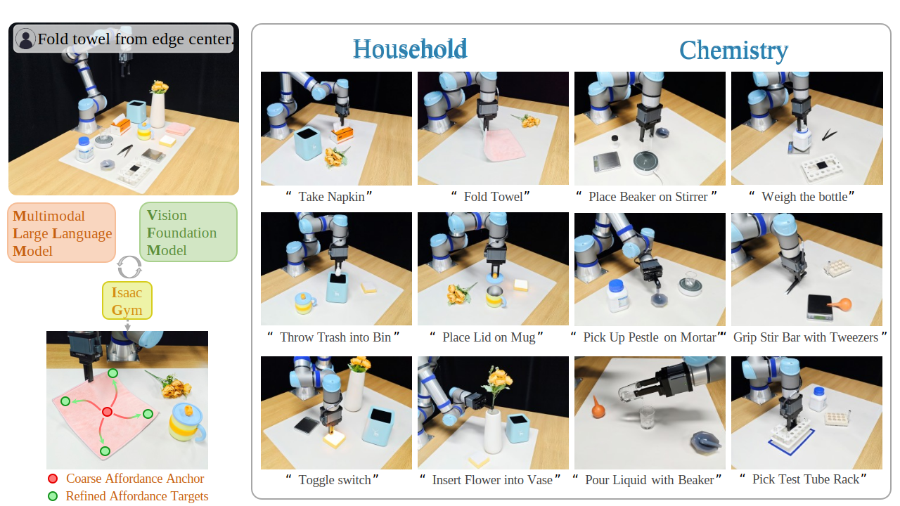

We recommend accessing this website using Edge & Google Chrome on Ubuntu for better interactive visualization.
Fine-grained robotic manipulation requires grounding natural language into appropriate affordance targets. However, most existing methods driven by foundation models often compress rich semantics into oversimplified affordances, preventing exploitation of implicit semantic information. To address these challenges, we present ReSemAct, a novel unified manipulation framework that introduces Semantic Structuring and Affordance Refinement (SSAR), powered by the automated synergistic reasoning between Multimodal Large Language Models (MLLMs) and Vision Foundation Models (VFMs). Specifically, the Semantic Structuring module derives a unified semantic affordance description from natural language and RGB observations, organizing affordance regions, implicit functional intent, and coarse affordance anchors into a structured representation for downstream refinement. Building upon this specification, the Affordance Refinement strategy instantiates two complementary flows that separately specialize geometry and position, yielding fine-grained affordance targets. These refined targets are then encoded as real-time joint-space optimization objectives, enabling reactive and robust manipulation in dynamic environments. Extensive simulation and real-world experiments are conducted in semantically rich household and sparse chemical lab environments. The results demonstrate that ReSemAct performs diverse tasks under zero-shot conditions, showcasing the robustness of SSAR with foundation models in fine-grained manipulation.
Framework. Given natural language instructions and RGB-D observations, the synergistic reasoning between VFM and MLLM facilitates the semantic structuring representation. Within the MLLM-driven TAMP framework, the Semantic Structuring and Affordance Refinement Strategy performs geometric and positional flow optimization over the Semantic Affordance Description, thereby generating the refined affordance targets. These targets are then encoded as cost functions and solved in real-time by a closed-loop MPPI-based optimizer in Isaac Gym, enabling joint-space control with point tracking.
Task. ReSemAct is a unified robotic manipulation framework for semantically diverse environments. It leverages synergistic reasoning between MLLMs and VFMs, introducing Semantic Structuring and Affordance Refinement (SSAR) to enable fine-grained robotic manipulation.
Interactive visualization 1
Interactive visualization 2
Interactive visualization
Interactive visualization
Disturbance for Household Tasks
"Fold towel."
"Throw trash into the bin."
Disturbance for Chemical Lab Tasks
"Pick up pestle on mortar."
"Pour liquid with beaker."
🌟 With the SSAR and MLLM-driven Task and Motion Planning, ReSemAct shows strong potential for long-horizon tasks. It achieves closed-loop control through autonomous multi-stage task decomposition, combined with condition reasoning and cost optimization.
Step 1: Pick up the tweezers.
Step 2: Grasp the stir bar with the tweezers.
Step 3: Place the stir bar into the empty beaker.
Step 4: Pour the liquid into the beaker.
Step 5: Place the beaker on the magnetic stirrer.
Interactive visualization
MLLM Extraction |
MLLM Refinement |
Task Planner |
Semantic Structuring |
Affordance Refinement |
Subtask Execution |
PreConditions Building |
Cost Function Building |
PostConditions Building |